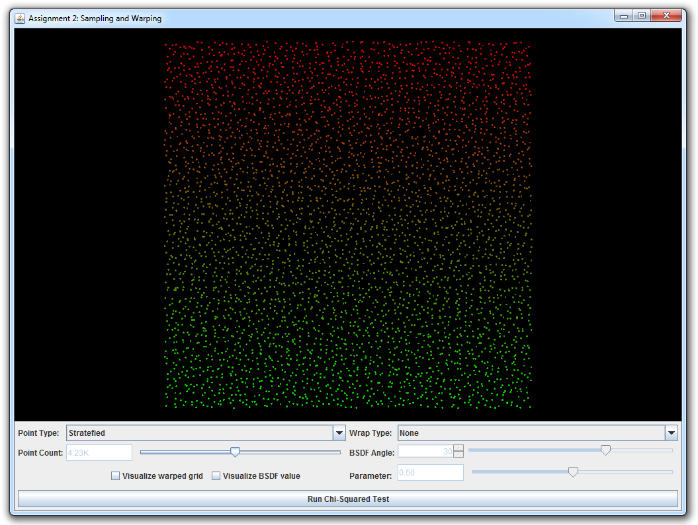
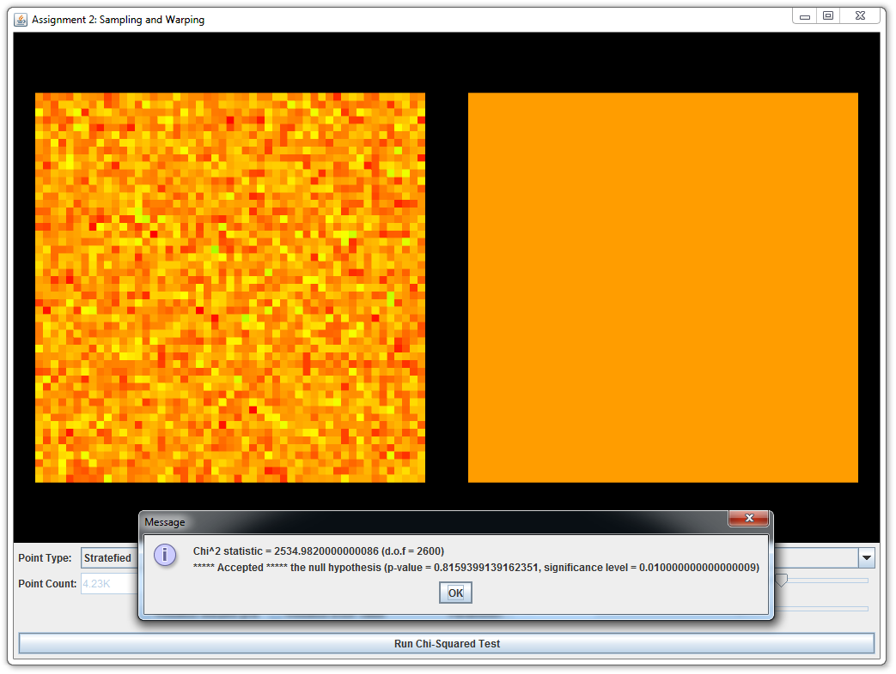
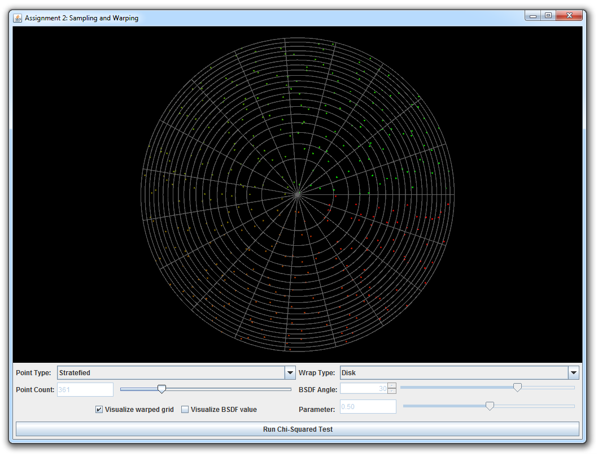
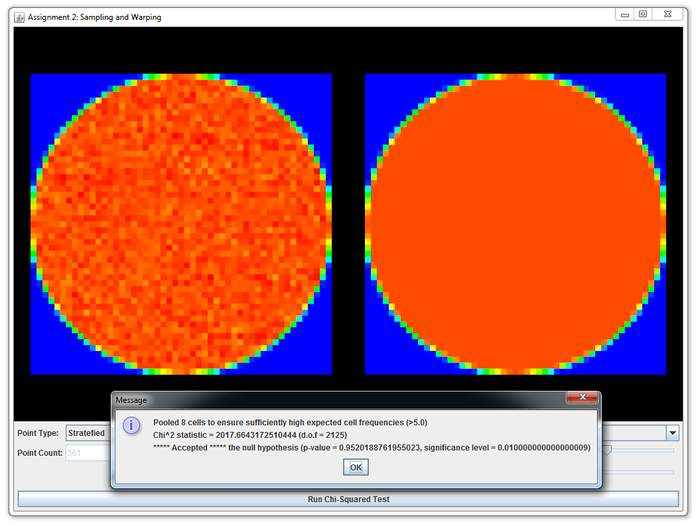

Programming Assignment 1 Getting Started
Part 1: Normal Integrator
Follow the preliminaries step-by-step guide. Compile Wakame and create your first Wakame class (shading normal integrator). Once you are finished, render the scene in data/pa1/ajax-normal.xml and show a side by side comparison against the reference data/pa1/ref/ajax-normal.pfm in your report.
Part 2: Average Visibility Integrator
In this exercise you will implement a new integrator named AverageVisibility (bound to the name "av" in the XML scene description language) which derives from Integrator to visualize the average visibility of surface points seen by a camera, while ignoring the actual material parameters (i.e. the surface's Bsdf).
Implementing the Average Visibility Integrator
Take a look at the wakame.util.Warp class. You will find that it implements the static method:
public static void sampleUniformHemisphere(Sampler sampler, Vector3d northPole, Tuple3d output)
which takes an instance of the Sampler class and the direction of the north pole and returns a uniformly distirubted random vector on the surface of a unit hemisphere (of radius 1) oriented in the direction of the north pole.
Please use this function to implement a new kind of integrator, which computes the average visibility at every surface point visible to the camera. This should be implemented as follows: First find the surface intersected by the camera ray as was done in the previous example. When there is no intersection, return Color3d(1.0,1.0,1.0). Otherwise, you must now compute the average visibility. Using the intersection point its.p, the world space shading normal its.shFrame.n, and the provided sampler, generate a point on the hemisphere and trace a ray into this direction. The ray should have a user-specifiable length that can be passed via an XML declaration as follows:
<integrator type="av"> <float name="length" value="... ray length ..."/> </integrator>
The integrator should return Color3d(0.0,0.0,0.0) if the ray segment is occluded and Color3d(1.0,1.0,1.0) otherwise.
Validation
The directory data/pa1 contains several example scenes that you can use to try your implementation. These scenes invoke your integrator many times for each pixel, and the (random) binary visibility values are accumulated to approximate the average visibility of surface points. Make sure that you can reproduce the reference images in data/pa1/ref/ajax-av-1024spp.pfm and data/pa1/ref/sponza-av-1024spp.pfm by rendering: data/pa1/ajax-av.xml and data/pa1/sponza-av.xml In addition you should pass all the tests in data/pa1/test-av.xml. Finally provide a side by side comparison with the reference images in your report.
Part 3: Direct Illumination Integrator
Point Lights
Before starting, read the source code of wakame.emitter.Emitter class to study its interface. Implement a PointLight class which derives from Emitter and implements an infinitesimal light source which emits light uniformly in all directions. Note that an empty Emitter interface already exists. Your task is to find a good abstraction that can be used to store necessary information related to light sources and query it at render-time from an Integrator instance. (You can use the PBRT textbook as a guide for this.) You will also have to store constructed emitters in the Scene (currently, an exception is being thrown when a light source is added to the scene). Parametrize your point light with a Color3d power (Watts) and the world space position (Point3d) of the point light. See data/pa1/sponza-direct.xml for how these parameters should be used in your XML files.
Direct Illumiation Integrator
Create an integrator call Direct, which renders the scene taking into account direct illumination from light sources. Direct.Li will be called multiple times for each camera ray and will be internally averaged by Wakame. Its expected to return a single estimate of the incident radiance along the camera ray which is given as a parameter. The equation this integrator solves is the standard rendering equation: $$ L_o(p, \omega_o) = L_e(p, \omega_o) + \int_{S^2} f(p, \omega_o, \omega_i) L_d(p, \omega_i) |\cos \theta_i| \ \mathrm{d} \omega_i $$ where
- $L_o(p, \omega_o)$ is the outgoing light from point $p$ in direction $\omega_o$,
- $L_e(p, \omega_o)$ is the light emitted from point $p$ in direction $\omega_o$ (in case the point $p$ is on a light source),
- $f(p, \omega_o, \omega_i)$ is the BSDF at point $p$,
- $L_d(p, \omega_i)$ is the light incident on point $p$ from direction $\omega_i$ that comes directly from the lights source, and
- $\theta_i$ is the angle that the vector $\omega_i$ makes with the normal at point $p$.
Validation
Make sure that you can reproduce the reference image in data/pa1/ref/sponza-direct-4spp.exr by rendering: data/pa1/sponza-direct.xml. Also you should pass all tests in data/pa1/test-direct.xml. Finally provide a side by side comparison with the reference image in your report.
Part 4: Sample Warping
In this part, you will generate sample points on various domains: disks, spheres, hemispheres, and a few more. There is an interactive visualization and testing tool to make working with point sets as intuitive as possible. Note that all work you do in this assignment will serve as building blocks in later assignments when we apply Monte Carlo integration to render images.
Run the java class wakame.app.WarpTest, which will launch the interactive warping tool. It allows you to visualize the behavior of different warping functions given a range of input point sets (independent, grid, and stratefied).
This part is split into several subparts; in each case, you will be asked to implement a sample warping scheme and an associated probability distribution function. It is crutial that both are consistent with respect to each other (i.e., that warped samples have exactly the distribution described by the density function you implemented). Otherwise, errors would arise if we used inconsistent warpings for Monte Carlo integration. Teh warping test tool comes with a $\chi^2$ test to check this consistency condition.
|  |  |  |  |
| The input point set (stratified samples passed through a "no-op" warp function) | This point set passed the test for uniformity. | A more interesting case that you will implement (with a grid visualization of the mapping) | This warping passed the tests as well. |
{kind=link}
{kind=link}
{kind=link}
{kind=link}
Implement the missing functions in wakame.util.Warp. This class consists of various warp methods that take as input a 2D point \((s, t) \in [0, 1) \times [0, 1) \) (and maybe some other domain specific parameters) and return the warped 2D (or 3D) point in the new domain. Each method is accompanied by another method that returns the probability density with which a sample was picked. Our default implementations all throw an exception, which shows up as an error message in the graphical user interface. Note that the PBRT textbook also contains considerable information on this topic.
-
Warp.squareToUniformDiskandWarp.squareToUniformDiskPdfImplement a method that transforms uniformly distributed 2D points on the unit square into uniformly distributed points on a planar disk with radius 1 centered at the origin. Next, implement a probability density function that matches your warping scheme.
-
Warp.squareToUniformSphereandWarp.squareToUniformSpherePdfImplement a method that transforms uniformly distributed 2D points on the unit square into uniformly distributed points on the unit sphere centered at the origin. Implement a matching probability density function.
Hint: You could save some time by implementing a newWarp.squareToUniformCylinderfunction and use the hat-box theorem discussed in class to solve not only this problem, but also the following two. -
Warp.squareToUniformHemisphereandWarp.squareToUniformHemispherePdfImplement a method that transforms uniformly distributed 2D points on the unit square into uniformly distributed points on the unit hemisphere centered at the origin and oriented in direction \((0, 0, 1)\). Add a matching probability density function.
-
Warp.squareToUniformSphericalCapandWarp.squareToUniformSphericalCapPdfImplement a method that transforms uniformly distributed 2D points on the unit square into uniformly distributed points on the spherical cap centered at the origin and oriented in direction \((0, 0, 1)\). Add a matching probability density function. A spherical cap is the subset of a unit sphere whose directions make an angle of less than \(\theta\) with the central direction. Note that the above functions expects \(cos\,\theta\) as a parameter.
-
Warp.squareToCosineHemisphereandWarp.squareToCosineHemispherePdfTransform your 2D point to a point distributed on the unit hemisphere with a cosine density function \[ p(\theta)=\frac{\cos\theta}{\pi}, \] where \(\theta\) is the angle between a point on the hemisphere and the north pole.
-
Warp.squareToBeckmannandWarp.squareToBeckmannPdfTransform your 2D point to a point distributed on the unit hemisphere with a cosine weighted Beckmann density function (we will describe applications of this distribution in class soon). Including the cosine weighting, this distribution is given by the following expression: \[ p(\theta,\phi) = D(\theta) \cos{\theta} = \frac{e^{\frac{-\tan^2{\theta}}{\alpha^2}}}{\pi\, \alpha^2 \cos^4 \theta }\cos \theta \] Where \(\alpha\) is a user specified roughness parameter and \(\theta\) is the angle between a direction on the hemisphere and the north pole. Begin by computing the cumulative distribution \(P(\theta,\phi)\) of \(p(\theta,\phi)\) and use that to compute the integral of \(p(\theta,\phi)\) over the entire hemisphere, i.e.: \[ I = P(\pi/2,2\pi) = \int_0^{2\pi} \int_0^{\frac{\pi}{2}} p(\theta,\phi) \sin{\theta} ~ d\theta ~ d\phi \] Verify that your result integrates to 1.
Hint: You might find integration by substitution useful, e.g. using the mappings \(x = \cos{\theta}\) and \(\tan^2{\theta} = \frac{1-x^2}{x^2}\). In addition this identity might come in handy: \[ \int f'(x) ~ e^{~f(x)} dx = e^{~f(x)} + C\text{, where } C\in\mathbb{R} \]Use the inversion method to turn the CDF into a method for sampling points that match the Beckmann distribution. Show the steps in your report.
You should pass all \(\chi^2\) tests of the above warpings and include screen shots in your report.